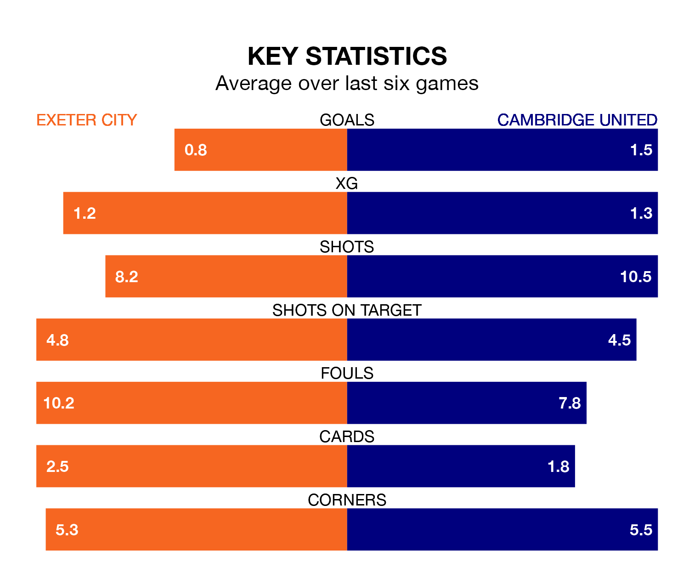

Exeter City host Cambridge United on Saturday at St James Park in EFL League One.
In their last league match, on January 13, Exeter lost to Blackpool 2-0 away.
Cambridge won, 2-1 at home against Fleetwood Town, with Sullay Kaikai scoring their goals.
In the last 10 years, Exeter and Cambridge have played each other on 18 occasions. Exeter won 11 of them, Cambridge six, and they drew once.
On average, Exeter scored 1.3 goals and Cambridge 0.9 in those matches.
Their last meeting was on December 22, when Cambridge won 2-0 at home.
Exeter are 21st in the table after 26 games, of which they have won seven and drawn five, earning 26 points.
Cambridge are five places ahead of City in 16th, with eight wins and six draws putting them on 30 points.
With 18 goals in 26 games so far this season, the hosts are the league's second-lowest scorers with 0.7 goals per game. And they are conceding more than average, letting in 39 goals at a rate of 1.5 per game.
United are also below average scorers, with 0.9 goals per game, compared to a league average of 1.3. They have conceded 1.3 goals per game.
Exeter are in mixed form in EFL League One, with two wins and a draw from their last six games.
With three wins and a draw over that period, the away side's form is better – they have taken 10 points from 18, compared to Exeter's seven.
Saturday's match will be refereed by Scott Simpson, who has taken charge of four EFL League One games so far this season, issuing two red cards and booking 13 players. He has not awarded any penalties.
He is yet to oversee a match featuring either Exeter or Cambridge this season.
Updated: 06:13 (UTC), 18/01/24